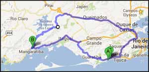
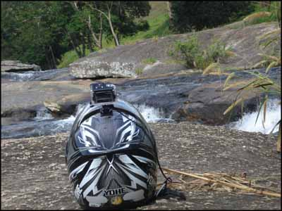
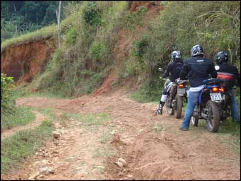
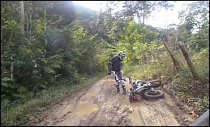
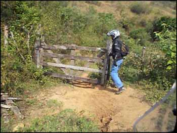
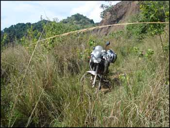
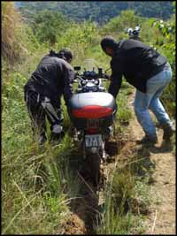
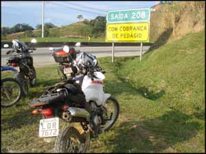

Mais um rolé no ritmo Bate e Volta. Dessa vez, saí de casa e fui me encontrar com mais três amigos no Bob's da Avenida Brasil altura de Santa Cruz. O plano era seguir pela Rio Santos até Mangaratiba/RJ, e subir a Serra do Piloto, passando pelos rios e cachoeiras da região.
Chegando a galera, pé na estrada. Até Mangaratiba asfalto bom (bom nível Governo do Rio... ou seja, bem mais ou menos) e trânsito bem leve, deu pra curtir as curvas e seguir em uma velocidade boa. Chegando na cidade, entramos à direita, para pegar a Serra do Piloto e subir subir subir...
Muitas boas curvas, a maior parte com asfalto também bacana, foi um bom trecho percorrido. Em vinte minutos alcançamos o fim do asfalto, e começou nosso off road de leve. Caminhos por vilarejos bem humildes, fusquinhas e kombis pra todo lado.
Uma parada no primeiro rio que encontramos para descansar as pernas e tirar umas fotos. Bom lugar para fazer um churrascão aquele, o acesso é bem fácil e a diversão garantida!
[caption id="attachment_120" align="aligncenter" width="400"] Algumas valas engoliam as motos[/caption]
Voltando às motocas, começamos o off road de verdade. Muitas valas na estrada de barro, muitas poças, muita lama. Bacana. Começamos a passar por um pessoal com motos de trilha, o que já indicava o que estava por vir. Animação, apreensão.
[caption id="attachment_119" align="aligncenter" width="350"] Algumas quedas no grupo...[/caption]
Rodamos bastante, algumas quedas no grupo, mas nada grave. Só que não conseguíamos achar o caminho que nos levaria para as cachoeiras, então começamos a rodar meio aleatoriamente. Até que passamos a avançar em estradinhas fechadas por porteiras das fazendas.
E chegamos em uma porteira em particular que nos guardava uma boa aventura. Perguntamos a um morador numa casa próxima, e o mesmo disse que naquele caminho há muito tempo não passava ninguém. E que estava bem complicado, observando ainda que nós não estávamos com "pneu praquilo". Bom, ninguém botou o galho dentro, agradecemos a informação, e seguimos.
[caption id="attachment_121" align="aligncenter" width="350"] Abrindo a porteira para o inferno ...[/caption]
Ora, não é que o caboclo estava falando bem sério mesmo! Após uma das porteiras, que um do grupo depois apelidou de "porteira do inferno" (hahaha) tivemos cada vez mais dificuldade. A vegetação já tomava conta da estradinha que um dia esteve ali.
Era um terreno bem íngreme, e bastante escavado pela água das chuvas. Com dificuldade fomos avançando. E avançamos mais. E o mato fechando tudo. Chegou uma hora que pensei "sem chances de voltar, é muito íngreme, com nossos pneus a motoca não sobe nem a pau".
[caption id="attachment_122" align="aligncenter" width="350"] O mato tomou conta da trilha[/caption]
Resolvemos parar de descer um pouco com as motos para ver melhor o que nos aguardava. E foi provavelmente a melhor coisa que fizemos. Desci bastante e com muita dificuldade, mesmo a pé. E pelo que vi, só iria ficar pior. É, não tinha como encarar aquilo com as Teneres, principalmente com pneus originais. Se quebrasse alguma delas lá por baixo, sabe lá como iríamos tirá-la.
[caption id="attachment_123" align="aligncenter" width="200"] Moto agarrada na vala[/caption]
Por mais impossível que parecesse, a decisão mais lógica era mesmo tentar voltar por onde viemos. E foi casca grossa, mas conseguimos.
Voltamos pilotando as motos morro acima, vencendo pequenos trechos e parando para descansar e ajudar os atolados que ficavam para trás. Acho que para voltar uns 2 quilômetros demoramos quase 1 hora. Nem sei, perdi a noção do tempo, e o calor estava matando.
Após algumas quedas bobas do pessoal, e eu ileso e sendo jurado de ser a próxima vítima, conseguimos voltar para as estradas de barro mais leves. Rodamos meio sem destino ainda, e avistamos uma pista de decolagem do pessoal de paraglide.
Paramos para ver uma decolagem, alucinante. Logo um dos caras chegou para falar com a gente, puxando assunto de que ele tinha coragem de pular dali, mas não de pilotar uma moto, blá blá blá, até que finalmente ofereceu um vôo por R$ 100,00. Até que não pareceu má ideia, mas como não sei se aquele pessoal ali era certificado, e já estava todo mundo esgotado, recusamos a oferta.
Aproveitamos para chegar em uma "casa-botequim" que ficava no mesmo lugar, onde bebemos um caldo de cana muito top, e comemos alguns pastéis caseiros de carne e queijo. Tudo feito por uma tiazinha que mora ali, em um óleo pra lá de velho e uma panela pra lá de preta, o que certamente deixa o pastel mais gostoso.
[caption id="attachment_124" align="aligncenter" width="300"] De volta à civilização...[/caption]
Depois de toda essa aventura, montamos nas motocas e tomamos nosso rumo, estrada de chão adentro, e acabamos saindo na Via Dutra. De lá pra casa voltei num ritmo tranquilo, e estava vencido mais um dia de motoaventura pra contar.
Vídeo com pedaços da nossa aventura:
[vimeo vimeo.com/68399303]
- Motocicleta utilizada: Yamaha Ténéré 250